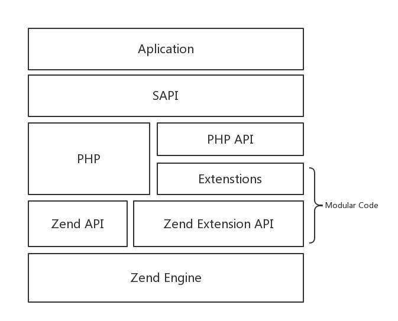
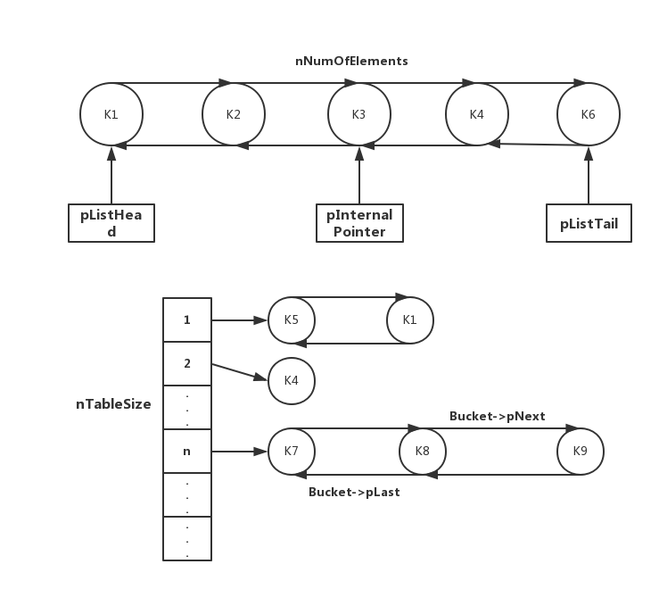

一、PHP的三个模块
内核：PHP内核用来处理请求、文件流、错误处理等相关操作。
Zend引擎：用以将源文件转换成机器语言，然后在虚拟机上运行它。
扩展层：是一组函数、类库和流，PHP使用它们来执行一些特定的操作。比如，我们需要mysql扩展来连接MySQL数据库；当ZE执行程序时可能会需要连接若干扩展，这时ZE将控制权交给扩展，等处理完特定任务后再返还。
二、PHP的核心架构

Zend引擎：Zend整体用纯C实现，是PHP的内核部分，它将PHP代码翻译（词法、语法解析等一系列编译过程）为可执行opcode的处理并实现相应的处理方法、实现了基本的数据结构（如hashtable）、内存分配及管理、提供了相应的api方法供外部调用，是一切的核心，所有的外围功能均围绕Zend实现。
Extensions：围绕着Zend引擎，extensions通过组件式的方式提供各种基础服务，我们常见的各种内置函数（如array系列）、标准库等都是通过extension来实现，用户也可以根据需要实现自己的extension以达到功能扩展、性能优化等目的。
Sapi：Sapi全称是Server Application Programming Interface，也就是服务端应用编程接口，Sapi通过一系列钩子函数，使得PHP可以和外围交互数据，这是PHP非常优雅和成功的一个设计，通过sapi成功的将PHP本身和上层应用解耦隔离，PHP可以不再考虑如何针对不同应用进行兼容，而应用本身也可以针对自己的特点实现不同的处理方式。
上层应用：通过调用不同的sapi方式得到各种各样的应用模式，apache、在命令行下以脚本方式运行等。
三、Sapi
Sapi通过一系列的接口，使得外部应用可以和PHP交换数据并可以根据不同应用特点实现特定的处理方法。
cli：命令行调用的应用模式。
cgi、fastcgi、php-cgi、php-fpm之间的关系
cgi：是 Web Server与Web Application之间数据交换的一种协议，但是每次请求，都需要fork一个进程，当有大并发请求时，会占用很多CPU和内存，造成服务器压力。
fastcgi：同CGI，一种通信协议，与CGI的区别是，它是常驻型的，它可以一直执行着，只要激活后，不会每次都要花费时间去fork一次。
php-cgi：是PHP（Web Application）对Web Server提供的cgi协议的接口程序。
php-fpm：是PHP对Web Server提供的fastcgi协议的接口程序，就是支持解析php的一个fastcgi进程管理器/引擎，额外还提供了相对智能一些的任务管理。php-fpm.conf配置里有个max-children参数，它是配置php-cgi子进程数量，通常是 服务器内存/30M，就是该参数值。
四、核心数据结构 —— HashTable
HashTable是Zend的核心数据结构，在PHP里面几乎并用来实现所有常见功能，我们知道的PHP数组即是其典型应用，此外，在zend内部，如函数符号表、全局变量等也都是基于hash table来实现。
PHP的hash table具有如下特点：
支持典型的key->value查询
可以当做数组使用
添加、删除节点是O（1）复杂度
key支持混合类型：同时存在关联数组合索引数组
Value支持混合类型：array(“string”, 2332)
支持线性遍历：如foreach
Zend hash table实现了典型的hash表散列结构，同时通过附加一个双向链表，提供了正向、反向遍历数组的功能。其结构如下图：

在hash table中既有key->value形式的散列结构，也有双向链表模式，使得它能够非常方便的支持快速查找和线性遍历。
散列结构：Zend的散列结构是典型的hash表模型，通过链表的方式来解决冲突。需要注意的是zend的hash table是一个自增长的数据结构，当hash表数目满了之后，其本身会动态以2倍的方式扩容并重新元素位置。初始大小均为8。另外，在进行key->value快速查找时候，zend本身还做了一些优化，通过空间换时间的方式加快速度。比如在每个元素中都会用一个变量nKeyLength标识key的长度以作快速判定。
双向链表：Zend hash table通过一个链表结构，实现了元素的线性遍历。理论上，做遍历使用单向链表就够了，之所以使用双向链表，主要目的是为了快速删除，避免遍历。
Zend hash table是一种复合型的结构，作为数组使用时，即支持常见的关联数组也能够作为顺序索引数字来使用，甚至允许2者的混合。
PHP关联数组：关联数组是典型的hash_table应用。一次查询过程经过如下几步（从代码可以看出，这是一个常见的hash查询过程并增加一些快速判定加速查找。）：
1 | getKeyHashValue h; |
PHP索引数组：索引数组就是我们常见的数组，通过下标访问。例如 $arr[0]，Zend HashTable内部进行了归一化处理，对于index类型key同样分配了hash值和nKeyLength(为0)。内部成员变量nNextFreeElement就是当前分配到的最大id，每次push后自动加一。正是这种归一化处理，PHP才能够实现关联和非关联的混合。由于push操作的特殊性，索引key在PHP数组中先后顺序并不是通过下标大小来决定，而是由push的先后决定。例如 $arr[1] = 2; $arr[2] = 3;对于double类型的key，Zend HashTable会将他当做索引key处理
五、PHP变量
PHP是一门弱类型语言，本身不严格区分变量的类型。PHP在变量申明的时候不需要指定类型。PHP在程序运行期间可能进行变量类型的隐示转换。和其他强类型语言一样，程序中也可以进行显示的类型转换。PHP变量可以分为简单类型(int、string、bool)、集合类型(array resource object)和常量(const)。以上所有的变量在底层都是同一种结构 zval。
zval是zend中另一个非常重要的数据结构，用来标识并实现PHP变量，其数据结构如下：
1 | typedef union _zvalue_value { |
zval主要由三部分组成：
type：指定了变量所述的类型（整数、字符串、数组等）
refcount&is_ref：用来实现引用计数
value：核心部分，存储了变量的实际数据
zvalue是用来保存一个变量的实际数据。因为要存储多种类型，所以zvalue是一个union，也由此实现了弱类型。
引用计数案例：
1 | $a = 1; // refcount=1 |
输出结果
1 | a=1,b=6 |
如何使用资源：
注册：对于一个自定义的数据类型，要想将它作为资源。首先需要进行注册，zend会为它分配全局唯一标示。
获取一个资源变量：对于资源，zend维护了一个id->实际数据的hash_table。对于一个resource，在zval中只记录了它的id。fetch的时候通过id在hash_table中找到具体的值返回。
资源销毁：资源的数据类型是多种多样的。Zend本身没有办法销毁它。因此需要用户在注册资源的时候提供销毁函数。当unset资源时，zend调用相应的函数完成析构。同时从全局资源表中删除它。
资源可以长期驻留，不只是在所有引用它的变量超出作用域之后，甚至是在一个请求结束了并且新的请求产生之后。这些资源称为持久资源，因为它们贯通SAPI的整个生命周期持续存在，除非特意销毁。很多情况下，持久化资源可以在一定程度上提高性能。比如我们常见的mysql_pconnect ,持久化资源通过pemalloc分配内存，这样在请求结束的时候不会释放。
对zend来说，对两者本身并不区分。
PHP中的局部变量和全局变量是如何实现的？对于一个请求，任意时刻PHP都可以看到两个符号表(symbol_table和active_symbol_table)，其中前者用来维护全局变量。后者是一个指针，指向当前活动的变量符号表，当程序进入到某个函数中时，zend就会为它分配一个符号表x同时将active_symbol_table指向a。通过这样的方式实现全局、局部变量的区分。
获取变量值：PHP的符号表是通过hash_table实现的，对于每个变量都分配唯一标识，获取的时候根据标识从表中找到相应zval返回。
函数中使用全局变量：在函数中，我们可以通过显式申明global来使用全局变量。在active_symbol_table中创建symbol_table中同名变量的引用，如果symbol_table中没有同名变量则会先创建。